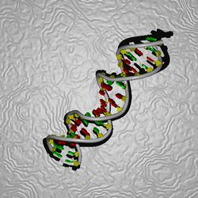
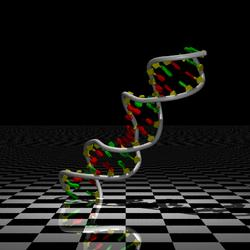

|
The default background is simply the background color from DINO, specified with
the line:
background {color rgb <0.000,0.000,0.000>}
To use a white background, for example, use:
background {color rgb <1,1,1>}
The three floating point values are RGB triplets ranging from zero to one. Due
to the nature of a raytracer, however, much nicer backgrounds can be
constructed. Two examples shall be given here: a backdrop and an
infinite plane. The bounding box information written out by DINO is used,
such as:
// bounding box
// -24.978 -30.817 -20.448 26.820 26.427 18.574
These additional objects can be placed anywhere in the .pov file, or
they can be included from an additional file. A good place to put them is below
the bounding box information.
Backdrop
An infinite plane is placed behind the objects, at least as much as the third
value given for the bounding box, and assigned a texture. In this case, roughly
twice the minimal z-value was choosen. Also, depth-cueing was off.
|

|
plane {z, -40
texture {
pigment {color rgb 1}
normal {agate 0.9 agate_turb 10 scale 0.5}
finish {
ambient 0.0
diffuse 0.5 brilliance 0.01
specular 0.3 roughness 0.05
}
scale 100
}
}
|
Infinite Plane
An infinite plane is placed below out scene, using the second (min y) value from
the bounding box - actually a little less. Also, an additional light is placed
directly above the scene, to add some dramatic illumination. There is a little
depth cueing in the scene.
|

|
light_source {
<0,100,0>
color rgb 1
spotlight radius 100 point_at <0,0,0>
}
plane {y, -31
texture {
pigment {checker color rgb 1 color rgb 0}
finish {
reflection 0.7
}
scale 10
}
}
|
If you have generated a nice background for a scene and would like to share it,
please drop me an email with the background code and an example image.
(c) 2001-2005 Ansgar Philippsen
|
){kind=link}
){kind=link}